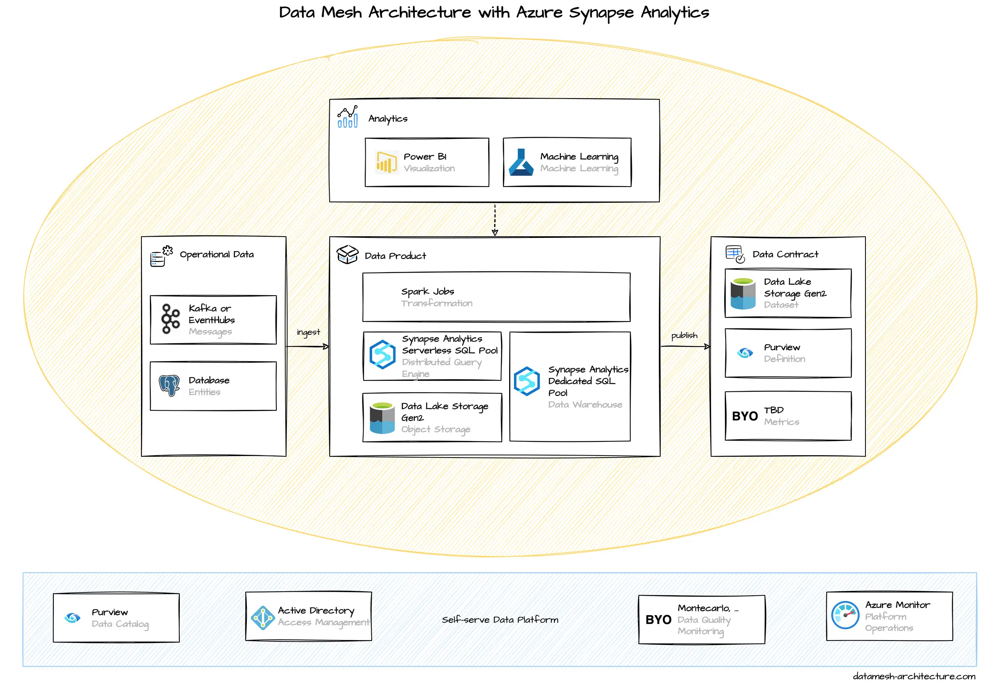

Microsoft offers Azure Synapse Analytics as the central component for implementing data mesh.
We evaluated the Azure tech stack, especially Azure Synapse Analytics. To be honest, we struggled a bit during this evaluation, and we were a bit disappointed as we expected a better developer experience. We couldn't really figure out how to set up a data mesh that made sense for us. But we are open to chat with Azure experts that might know more than we do - feel free to reach out to us.
If you're on Azure, we currently would recommend to consider Snowflake deployed to Azure, or, if you are really into ML, have a look at Azure Databricks.